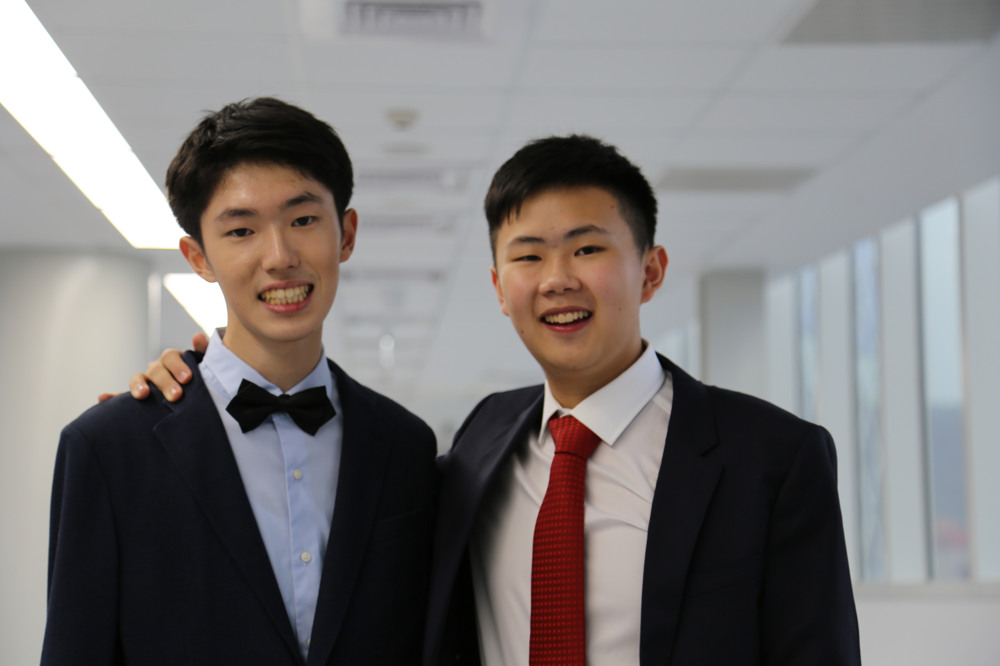

<div class="col-md-12">
  <div class="item row photo-item">
    <div class="col-sm-5">
      <h3 class="item-title">Douglas Lee and Brian Lain</h3>
      <h4 class="item-subtitle">Secretaries General</h4>
      <p style="margin-bottom: 0px">Dear Participants of TASMUN XI,<br>
        <br>We are your Secretaries-General, Douglas and Brian. Stemming from a seed of interest in politics and
        current events, our MUN careers have grown immensely since we started in middle school, from attending our
        first conference to leading a committee for the first time, and now becoming Secretaries-General of TASMUN. <br>
        <br>As our MUN journeys progressed to new heights, our passion for politics and current events remained.
        In fact, our enthusiasm only grew stronger. In September 2019, we attended the annual Oslo Freedom Forum
         in Taipei: a conference where human rights defenders share their stories and actions.<br>


    </div>
    <div class="col-lg-7">
      </img>
    </div>

    <div class="col-sm-12">
      <p><br>As we entered this life-changing event, the appealing wall of sticky notes labeled the “Unite Lennon Wall”
        caught our attention. This was a wall blooming with blessings on sticky notes, uniting all participants with
         our shared determination to fight for the universality of freedom and human rights. It was from this moment
          that we started recognizing Lennon Walls to be beyond symbols for revolution and freedom of expression, but
           walls that break divisions and unite a group of people with common values and goals.
        <br>This is the inspiration behind our theme: “Uniting Our Lennon Walls”. We hope to unite the values and goals
         of the all the unique communities that will be joining forces this coming April, with the aim to collectively
          work towards a brighter and more sustainable future.<br>
          <br>We hope to meet all of you very soon, and cannot wait to see the power of our generation at full force! <br>
        <br>Best Regards,<br>Douglas L. and Brian L.<br>
        Secretaries General<br>
        TASMUN XI
    </div>


  </div>
</div>